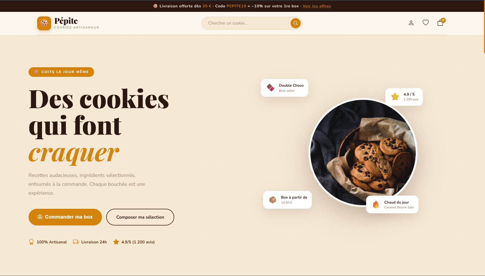
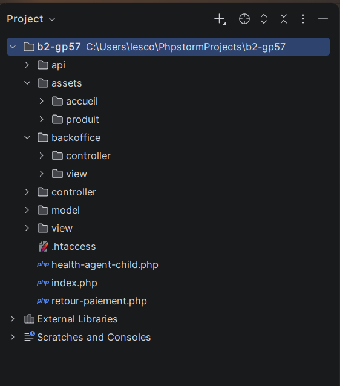

Présentation
Application e-commerce complète réalisée dans le cadre d'un projet académique (SAE). L'objectif : construire de A à Z un site de vente en ligne en respectant une architecture MVC stricte, sans framework — tout en PHP natif avec PDO et Composer pour la gestion des dépendances.
Fonctionnalités
- Catalogue de produits avec filtres, tri et recherche
- Panier persistant côté serveur (sessions PHP)
- Système de paiement en ligne (intégration simulée)
- Gestion des comptes utilisateurs : inscription, connexion, profil
- Système d'avis clients avec notes et commentaires
- Backoffice admin : gestion des produits, commandes, utilisateurs
- Dashboard de statistiques (revenus, produits les plus vendus, évolution)
- API REST interne pour les échanges AJAX (panier, avis)
Architecture MVC
Le projet suit une organisation en couches strictement séparées :
- Models — accès aux données via PDO, requêtes SQL préparées
- Views — templates PHP avec séparation logique/affichage
- Controllers — gestion des routes et de la logique métier
- Router — système de routing custom via .htaccess
